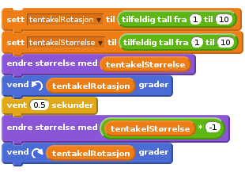

Nivå 4
Scratchkort - Tentakler
For å få en tentakel til å bevege seg, kan vi rotere den og endre størrelse ved å bruke tilfeldig tall med en lav verdi i en variabel, for så å vente et øyeblikk før vi gjenoppretter den originale størrelsen.

(Merk at vi multipliserer tentakelStørrelse med -1 for å få en negativ verdi?)